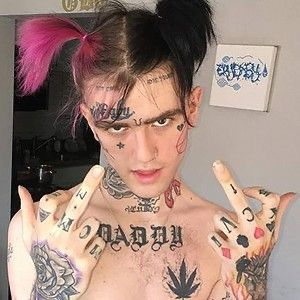

.jpg)



Una personalidad atormentada incapaz de decir no a los amigos que se le acercan cuando se encuentra con el éxito.
Con ansiedad y depresión.
Nació en Allentown, Pensilvania el 1 de noviembre de 1996, su nombre real es Gustav Elijah Åhr, se crió en Long Island, sus padres se separaron a los 14 años y asistió a la escuela secundaria de Long Beach, Decidió dejar la escuela y estudiar un curso en linea ya que padecia bullying.
los 17 se mudo a Los Ángeles, empezó a mostrar interés por la música y moda desde pequeño, se hizo su primer tatuaje a los 14 en honor a su madre y empezó con la música a los 18, llegando a la fama a los 19 y muriendo en su gira.
Murió el 15 de noviembre de 2017 en la caravana que tenían para llevar a cabo su gira, a los 21 años, por una sobredosis de xanax unas pastillas para la ansiedad y ataques de pánico debido a que tomó seis juntas y según testigos (algunos de sus amigos) estas no tenían buena pinta ya que habían sido cortadas con fentanilo, un anestésico más fuerte que la morfina.
Fue encontrado por sus amigos que lo grabaron pensando que solo estaba dormido, hasta que se dieron cuenta que había fallecido.
Dato curioso : antes de morir publicó "Cuando muera, me amarás"
Era cantante, rapero, compositor y modelo. Sus principales géneros eran Emo trap, trap, hip hop, SoundCloud rap, lo-fi, cloud rap, rock alternativo, pop punk, emo, alternative R&B, post-hardcore, rap underground.
Un crítico musical de Nueva York, Jon Caramanica, definió a Gustav como el Kurt Cobain del rap, y describió su música como emocional y diabólicamente melódica. Las letras hablaban sobre la depresión, el consumo de drogas, relaciones pasadas y pensamientos de suicidio. Antes del lanzamiento de su primer álbum, mencionó a Kurt Cobain, David Bowie, Frank Ocean y Riff Raff como sus inspiraciones. Otras influencias fueron Ghostemane, Red Hot Chili Peppers, Linkin Park, Crystal Castles, SebastiAn, Seshollowaterboyz, Rozz Williams, Blink-182, My Chemical Romance y Panic! At The Disco.
Su dos padres fueron profesores, su madre Liza Womack era maestra de primaria y su padre Karl Johan Åhr, tambien tenia un hermano llamado Karl Åhr.
Comenzó a salir con la actriz y cantante Bella Thorne en septiembre de 2017 (fue visto dándose un beso con ella).
Tuvo novias las cuales no son muy conocidas como Emma Rose Harris su supuesta primer novia la cual conocía desde tercer grado o toopoor de la cual no hay información pero se sabe que fue muy hateada ya que fue culpada por su muerte.
Y por último la novia que tuvo hasta el día de su muerte (la muerte los separó y eso que no estaban casados(basta no es gracioso)). La influencer de ig, Arzaylea Rodríguez con la que empezó a salir Poco tiempo después del lanzamiento que lo llevó a la fama.